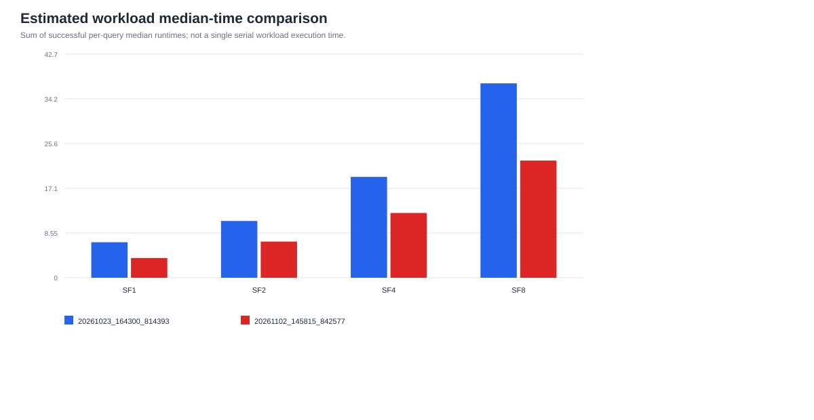
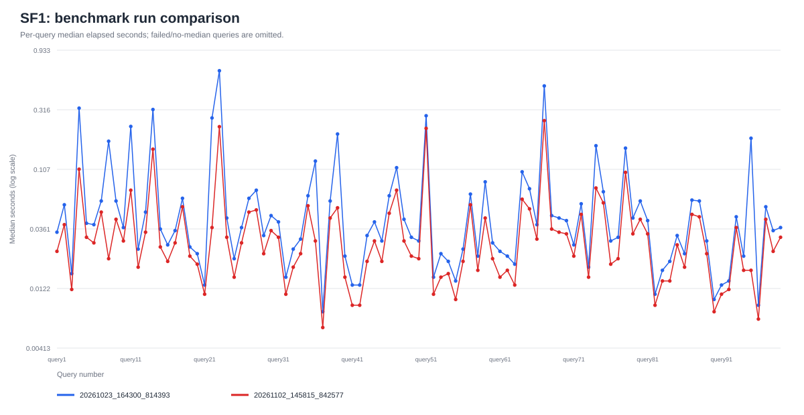
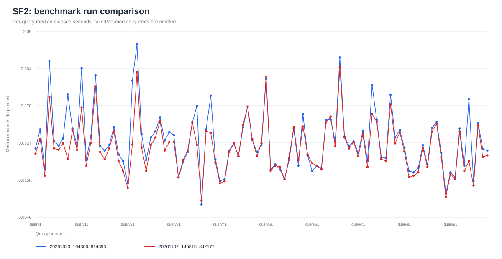
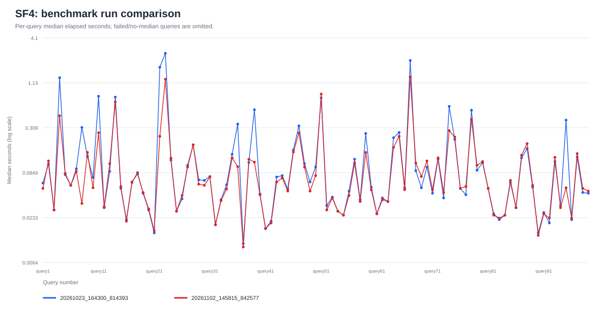
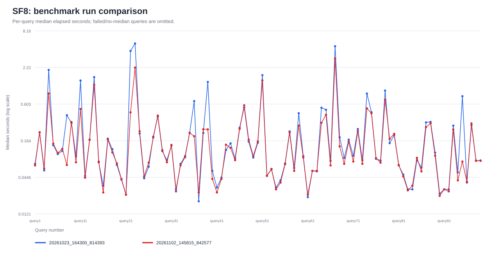

Run 1: 20261023_164300_814393; Run 2: 20261102_145815_842577. Per-query charts use median elapsed time on the vertical axis. Each run contains five measured runs for all 99 queries at SF1/SF2/SF4/SF8 with no failures or timeouts. Timeout limits differed (1,800 seconds in Run 1 and 300 seconds in Run 2), but no queries timed out. See the CSV for the full query-by-query comparison.
Download full comparison table (CSV)
| Scale | 20261023_164300_814393 (s) | 20261102_145815_842577 (s) | Run 2 change |
|---|---|---|---|
| SF1 | 6.786 | 3.766 | -44.50% |
| SF2 | 10.852 | 6.910 | -36.33% |
| SF4 | 19.277 | 12.373 | -35.81% |
| SF8 | 37.154 | 22.389 | -39.74% |




